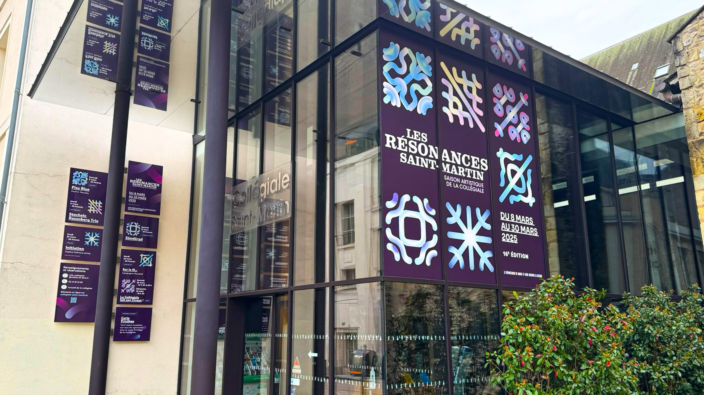
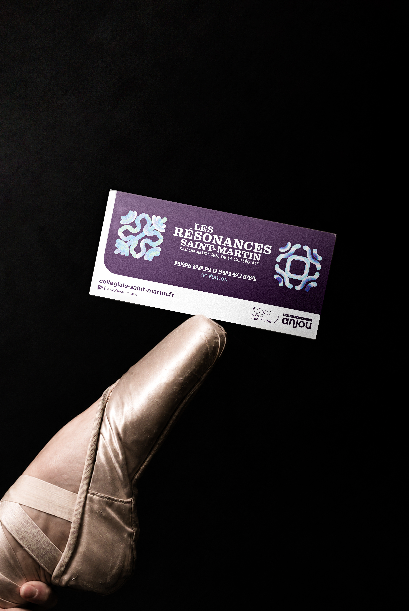
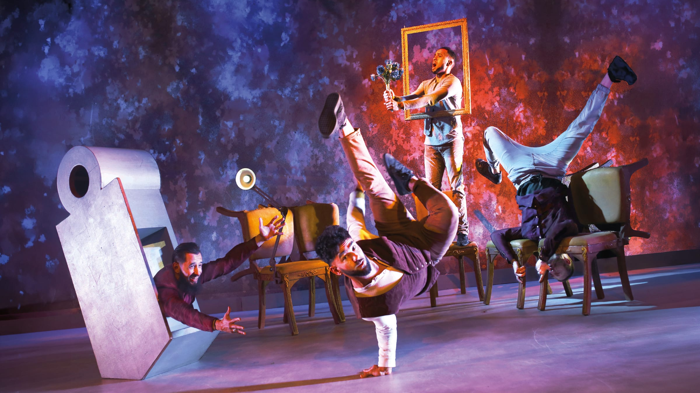
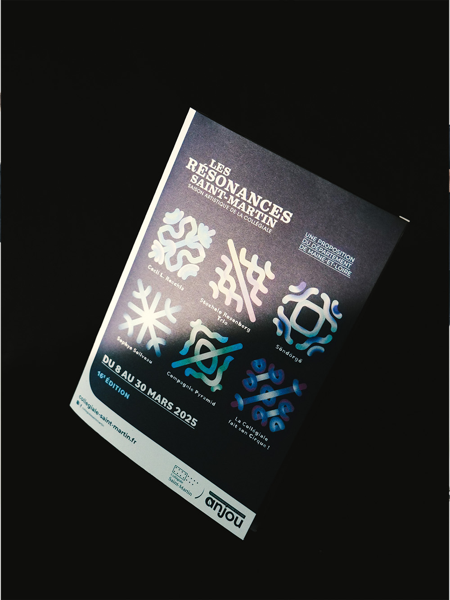
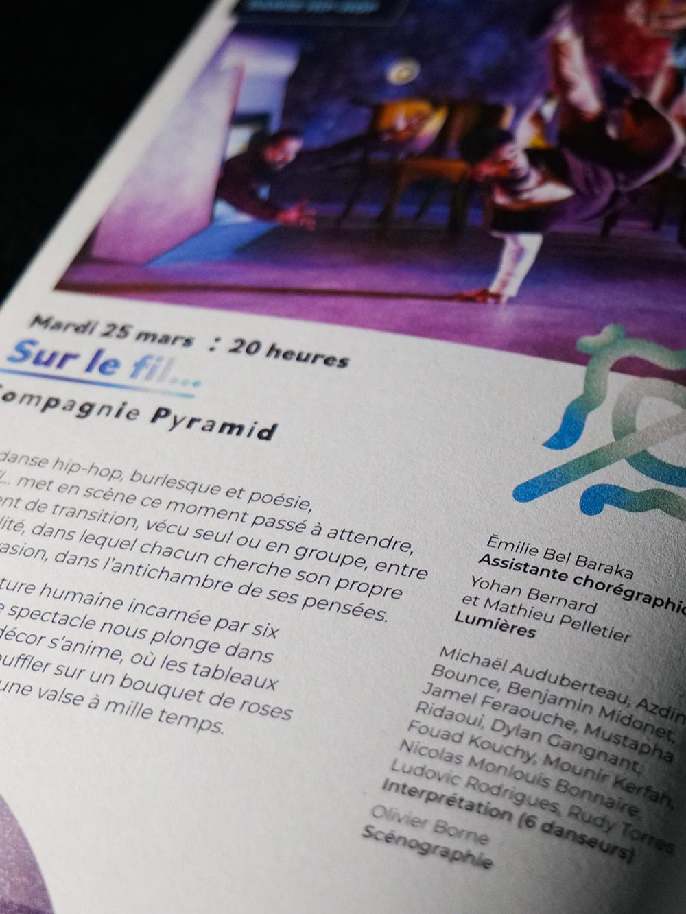
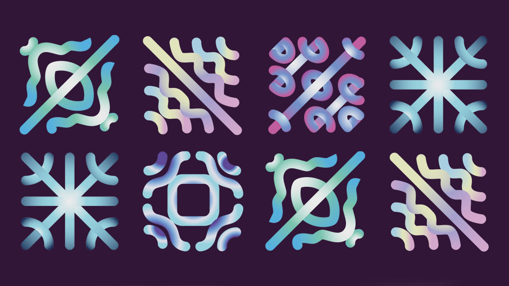

Les Résonances Saint-Martin
Conception de l'édition 2025 de l'événement : création de l'affiche, définition du système de formes et de couleurs, puis déclinaison sur l'ensemble des supports print et web.


À l'occasion de l'édition 2025 des Résonances Saint-Martin, j'ai assuré la conception complète de l'identité, dans le cadre de mon alternance au Département de Maine-et-Loire, pour la Collégiale Saint-Martin. De l'affiche principale au système de formes et de couleurs, j'ai décliné cette identité sur plus de vingt supports print et web.
Chaque symbole possède son propre code couleur et son propre dégradé — un parti pris pensé pour que l'ensemble reste cohérent, tout en donnant à chaque forme sa singularité, à l'image des spectacles proposés.
- Année
- 2025
- Contexte
- Alternance, Département de Maine-et-Loire
- Domaines
- Identité, print & web


Le concept
L'identité des Résonances puise son inspiration dans les figures de Chladni. Ernst Chladni, physicien et musicien allemand du XVIIIe siècle considéré comme le père de l'acoustique, a mis en évidence un phénomène fascinant : lorsqu'une plaque recouverte de sable est mise en vibration — à l'aide d'un archet, par exemple — le sable se déplace et se rassemble le long des zones immobiles, dessinant des figures géométriques. À chaque fréquence sa forme : un son, un dessin unique.
C'est cette idée qui structure toute l'identité. Chaque spectacle de la saison fait naître sa propre forme, à l'image du son singulier qu'il porte. L'ensemble compose ainsi une famille visuelle cohérente, où chaque pièce reste pourtant unique — le son rendu visible.


Les Résonances Saint-Martin ont été l'un des premiers grands projets qui m'a été confié. Un projet qui m'a beaucoup plu, et qui m'a permis de comprendre de l'intérieur l'organisation d'un projet culturel : les contraintes de l'événementiel, le dialogue avec les équipes, et la rigueur nécessaire pour décliner une identité sur de nombreux supports sans jamais perdre sa justesse.
